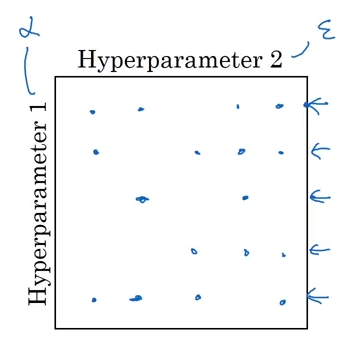

Random Search and Appropriate Search-Space Scaling
Grid search isn’t always our best approach for figuring out our best hyperparameters.
In the example of Deep Learning and Adam Optimization, there are several different hyperparameters to consider. Some, like the alpha constant, need tuning. On the other hand, constants like epsilon are basically taken as granted and don’t affect the model.
from IPython.display import Image
Image('images/feature_grid.PNG')
By grid searching over any feature space that includes epsilon, we’re putting five times the computation on our system for less-than-negligible performance gain.
Instead, Andrew Ng suggests doing a random search over the feature space to arrive at your coefficients. If instead, we did half the number of searches in a random fashion (below), we’d still get the learnings from tuning alpha, without over-searching in the epsilon space.
Image('images/feature_grid_random.png')
But this presents a new, interesting problem.
Whereas something like Number of Layers or Number of Hidden units might make sense to sample from on a linear scale, not all coefficients behave this way.
For instance, adjusting our alpha constant between 0.05 and 0.06 likely has a bigger performance impact than adjusting between 0.5 and 0.6, as it’s often a low-valued number.
And so by sampling randomly on a linear scale between 0.0001 and and 1, we spend as much compute resources investigating the upper-range values as the incremental, lower ones where the real optimization occurs.
Image('images/uniform_alpha.PNG')
Scaling
Thus, determining the correct scaling mechanism for your hyperparameters is crucial. You want to scale, based on the class of the coefficient, which may include the following:
Linear
This one’s easy. We just want to do a uniform search between two values.
import numpy as np
min_val, max_val = 0, 1
np.random.uniform(min_val, max_val)0.9358677626967968
Discrete
For whole-numbered values between two values, we’ll use randint()
np.random.randint(0, 10)2
Log Scale
For coefficients, like alpha above, where we want to select between a very small value and 1, it’s helpful to consider how to write it out as an exponent. For instance:
$0.0001 = 10^{-4}$
similarly
$1 = 10^{0}$
So this is actually just the same exercise as the Linear Scale, but between some negative number and 0, then piped as an exponent!
min_exp, max_exp = -4, 0
val = np.random.uniform(min_exp, max_exp)
10 ** val0.00305918793992655
Exponentially Weighted
This would likely be better-named as “Reverse Log Scale,” describing hyperparameters where your search space is most effective between, say, 0.9 and 0.999, on a Log-ish scale.
Following the same approach as above, we just want to do a uniform search over the correct range of values, plus some other steps– in this case, establishing a log log scale for 0.9 to 0.999 involves establishing a log scale for 0.0001 to 0.1 and subtracting that from 1
min_exp, max_exp = -3, -1
val = np.random.uniform(min_exp, max_exp)
1 - (10 ** val)0.9908195535776579